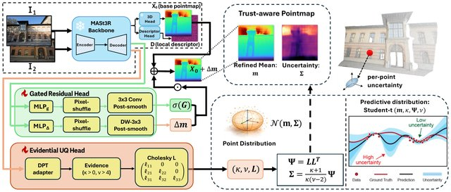

Trust It or Not: Evidential Uncertainty for Feed-Forward 3D Reconstruction with Trust3R
Equips feed-forward 3D reconstruction with probabilistically grounded, evidential pointmap uncertainty, so you know which parts of the predicted geometry to trust.